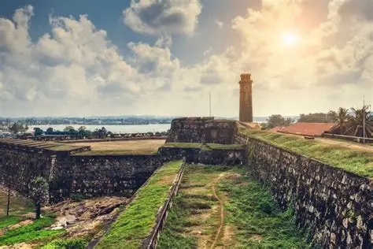

Galle Fort
Galle Fort is a historic and beautiful place in Sri Lanka. It is located in the city of Galle and was built by the Portuguese and later developed by the Dutch. The fort is famous for its old buildings, streets, lighthouse, and beautiful sea views. It is a popular destination for both local and foreign tourists.

Why I Want to Visit Galle Fort & How I Would Plan My Trip
I want to visit Galle Fort because it is a beautiful and historic place in Sri Lanka. I would like to explore the old buildings, walk along the fort walls, visit the lighthouse, and enjoy the beautiful sea view. I also want to take photos and experience the unique atmosphere of the fort.
I would plan my trip by choosing a suitable day and checking the weather before travelling. I would travel to Galle by train or bus and spend a full day exploring the fort. I would visit important places, try some local food, take photographs, and return home in the evening.
Places to See, Local Food to Try
There are many interesting places to see around Galle Fort. Visitors can explore the Galle Lighthouse, Dutch Reformed Church, old fort walls, and historic streets. The fort also has small shops, museums, cafés, and beautiful places to enjoy the sea view.
Visitors can try many delicious Sri Lankan foods in and around Galle Fort. Some popular choices include rice and curry, hoppers, kottu, string hoppers, and seafood dishes. There are also many cafés where visitors can enjoy snacks, fresh juices, and traditional Sri Lankan drinks.
.webp)
.webp)
A Travel Tip
Wear comfortable shoes because you may walk a lot while exploring Galle Fort. It is also a good idea to carry a water bottle, sunscreen, and an umbrella. Visiting in the morning or late afternoon is recommended because the weather is usually more comfortable for walking.